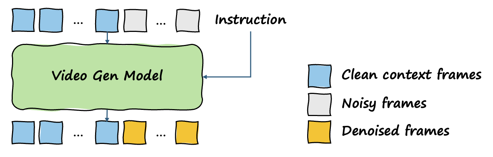

Our framework is intentionally simple: a standard video diffusion architecture trained only with the diffusion objective. The inputs are a video context (several frames from the same environment) and instructions; the output is a video that completes the instructed spatial task while maintaining scene geometry and temporal coherence.
